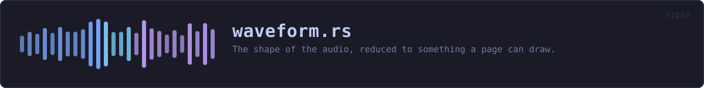

crates/veilvoice-video/src/waveform.rs
veilvoice-video · 245 lines · read the source
The shape of the audio, reduced to something a page can draw.
Peaks, not samples
A minute of audio at 48 kHz is 2.88 million samples and a waveform is about a thousand pixels wide. Drawing every sample would produce a path megabytes long that renders as a solid block.
So the audio is divided into as many buckets as there are columns, and each bucket keeps its minimum and maximum — not its average, and not its root-mean-square. The extremes are what a waveform is: they are what makes a plosive look like a plosive, and an average over a bucket of a symmetric waveform is approximately zero however loud it was.
It is drawn from the veiled audio
Worth stating, because the alternative is an easy mistake. The picture is of the output, not the input. A waveform is not a voiceprint — it carries no formants and no phase — but it does carry timing and loudness, and a picture of the original would show the original's timing and loudness beside a recording that had gone to some trouble to replace them.
What a waveform still shows
Silences, the rhythm of speech, how loud somebody was, and roughly where a sentence ends. That is the same turn-taking structure a conversation render keeps on purpose, drawn rather than heard, and it is not additional exposure beyond what the audio already carries.
WHAT THIS FILE CONTAINS
245 lines defining 4 functions (4 public), 1 type and 0 constants. Everything below is read out of the source, so it cannot disagree with the code.
The types it owns.
struct Envelopeline 33 — The peak envelope of a signal: one minimum and one maximum per column.
What happens when it runs. These are the ways in: public, and nothing else in this file calls them, so they are what an outside caller reaches first.
Envelope::lenline 42 — How many columns this envelope has.Envelope::is_emptyline 47 — Whether there are no columns at all.envelopeline 58 — Reduce samples to columns peak pairs.svg_pathline 101 — The envelope as an SVG path, filled, inside a box.
WHAT CALLS WHAT
The functions this file defines, and the calls between them. An edge means the callee's name appears, called, inside the caller's body — a syntactic reading, not a type-resolved one.
The same graph as Mermaid source
%%{init: {"theme":"base","themeVariables":{"background":"#1a1b26","primaryColor":"#1f2335","primaryTextColor":"#c0caf5","primaryBorderColor":"#7aa2f7","secondaryColor":"#16161e","tertiaryColor":"#16161e","lineColor":"#737aa2","textColor":"#c0caf5","mainBkg":"#1f2335","nodeBorder":"#7aa2f7","clusterBkg":"#16161e","clusterBorder":"#2f3549","fontFamily":"ui-monospace, SFMono-Regular, Consolas, monospace","fontSize":"14px"}}}%%
flowchart TD
n_len(["Envelope::len<br/>line 42"])
n_is_empty(["Envelope::is_empty<br/>line 47"])
n_envelope(["envelope<br/>line 58"])
n_svg_path(["svg_path<br/>line 101"])
click n_len href "https://github.com/tilas01/veilvoice/blob/main/crates/veilvoice-video/src/waveform.rs#L42" "open the source"
click n_is_empty href "https://github.com/tilas01/veilvoice/blob/main/crates/veilvoice-video/src/waveform.rs#L47" "open the source"
click n_envelope href "https://github.com/tilas01/veilvoice/blob/main/crates/veilvoice-video/src/waveform.rs#L58" "open the source"
click n_svg_path href "https://github.com/tilas01/veilvoice/blob/main/crates/veilvoice-video/src/waveform.rs#L101" "open the source"
classDef entry fill:#1f2335,stroke:#7aa2f7,color:#c0caf5
class n_len,n_is_empty,n_envelope,n_svg_path entryThis site loads no third-party script, so it cannot run Mermaid; the diagram above is the same nodes and edges drawn by the generator instead. GitHub renders the source below directly.
ITEMS
| Item | Line | Documentation |
|---|---|---|
Envelope pub struct | 33 | The peak envelope of a signal: one minimum and one maximum per column. |
Envelope::len pub fn | 42 | How many columns this envelope has. |
Envelope::is_empty pub fn | 47 | Whether there are no columns at all. |
envelope pub fn | 58 | Reduce samples to columns peak pairs. |
svg_path pub fn | 101 | The envelope as an SVG path, filled, inside a box. |